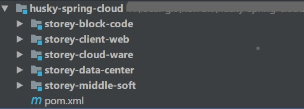
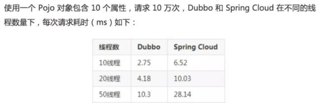
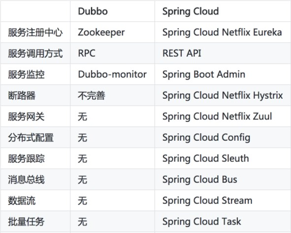

原文连接:https://www.cnblogs.com/cicada-smile/p/11416032.html
本文源码：GitHub·点这里 || GitEE·点这里
一、基础组件总结
1、文章阅读目录
1)、基础组件
2)、应用案例
基于SpringCloud实现Shard-Jdbc的分库分表扩容
3)、后续更新
该案例主要基于SpringCloud2版本，演示微服务在实际开发中的应用。

<modules>
<!-- 客户端接口层 -->
<module>storey-client-web</module>
<!-- 公共代码块层 -->
<module>storey-block-code</module>
<!-- 中间件管理层 -->
<module>storey-middle-soft</module>
<!-- 数据 中 心层 -->
<module>storey-data-center</module>
<!-- 微服务组件层 -->
<module>storey-cloud-ware</module>
</modules>采用版本
- Spring： 5.0+
- SpringBoot： 2.0+
- SpringCloud: 2.0+
2、常用组件概念
- Eureka组件
Eureka是一种基于REST的服务，主要用于AWS云，用于定位服务，以实现中间层服务器的负载平衡和故障转移。此服务称为EurekaServer。客户端组件EurekaClient，它使与服务的交互变得更加容易。
- Ribbon和Feign组件
Ribbon是一个客户端的负载均衡（Load Balancer，简称LB）器，它提供对大量的HTTP和TCP客户端的访问控制。
Feign 是一个声明式的 Web Service 客户端。它的出现使开发 Web Service 客户端变得很简单。使用 Feign 只需要创建一个接口加上对应的注解，比如：@FeignClient 接口类注解。
- Hystrix组件
微服务架构中某个微服务发生故障时，要快速切断服务，提示用户，后续请求，不调用该服务，直接返回，释放资源，这就是服务熔断。
- Turbine组件
微服务架构中为了保证程序的可用性，防止程序出错导致网络阻塞，出现了断路器模型。断路器的状况反应程序的可用性和健壮性，它是一个重要指标。HystrixDashboard是作为断路器状态的一个组件，提供了数据监控和直观的图形化界面。
- Zuul组件
Zuul 网关主要提供动态路由，监控，弹性，安全管控等功能。在分布式的微服务系统中，系统被拆为了多个微服务模块，通过zuul网关对用户的请求进行路由，转发到具体的后微服务模块中。
- Config组件
在微服务系统中，服务较多，相同的配置：如数据库信息、缓存、参数等，会出现在不同的服务上，如果一个配置发生变化，需要修改很多的服务配置。spring cloud提供配置中心，来解决这个场景问题。
- Zipkin组件
Zipkin是SpringCloud微服务系统中的一个组件，实现了链路追踪解决方案。可以定位一个请求到底请求了哪些具体的服务。在复杂的微服务系统中，如果请求发生了异常，可以快速捕获问题所在的服务。
二、Boot 对比Cloud
SpringBoot专注于快速开发单个微服务。SpringCloud是关注全局的微服务协调框架，它将SpringBoot开发的单个微服务整合管理，并为微服务之间提供，配置管理、服务发现、断路器、路由网关等集成服务，SpringCloud依赖SpringBoot。
三、Dubbo对比Cloud
1、调用方式对比
服务调用方式是 Dubbo 和 Spring Cloud 重要不同点,熟悉RPC/HTTP/REST概念，有助对比 Dubbo 和SpringCloud。RPC 是远端过程调用，其调用协议通常包含传输协议和编码协议。RPC调用是面向服务的封装，针对服务的可用性和效率等都做了优化。http是超文本传输协议，RPC 也可以用http作为传输协议，但一般是用 tcp作为传输协议。
2、执行性能对比

Dubbo 采用单一长连接和NIO异步通讯（保持连接/轮询处理），使用自定义报文的TCP协议，并且序列化使用定制Hessian2框架，适合于小数据量大并发的服务调用，以及服务消费者机器数远大于服务提供者机器数的情况，但不适用于传输大数据的服务调用。Spring Cloud 直接使用 HTTP 协议，在性能上弱于Dubbo。
3、注册中心对比
这里通常指ZooKeeper(Dubbo注册中心)和Eureka(Cloud注册中心)的对比。分布式领域著名的CAP理论（C：数据一致性，A：服务可用性，P：分区故障的容错性），Zookeeper保证的是CP，但对于服务发现而言，可用性比数据一致性更加重要，AP胜过CP，而 Eureka 设计则遵循 AP 原则。
4、框架生态对比

Dubbo 专注 RPC 和服务治理，Spring Cloud 则是一个微服务架构生态。
四、源代码地址
GitHub·地址
https://github.com/cicadasmile/spring-cloud-base
GitEE·地址
https://gitee.com/cicadasmile/spring-cloud-base